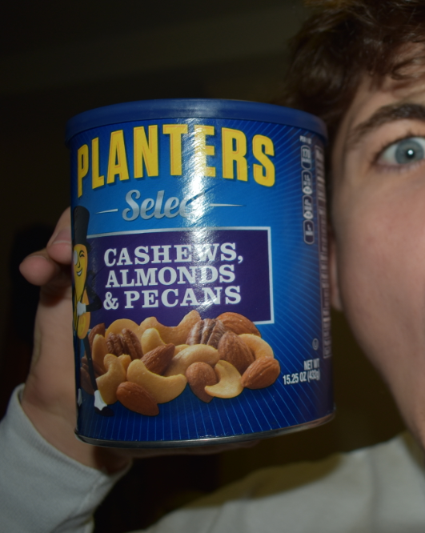

Foods:
Sushi is my favorite food. The first time I had sushi was with my girlfriend
when I was a sophomore in highschool. Although I didn't like it that much at
first, it has become my all time favorite food and my all time favorite roll
is the Dragon Roll
Yogurt and applesauce are my favorite side items. Vanilla Greek yogurt is my
favorite yougurt.
I also really like assorted nuts, almonds are probably my favorite. Especially
chocolate covered ones.
